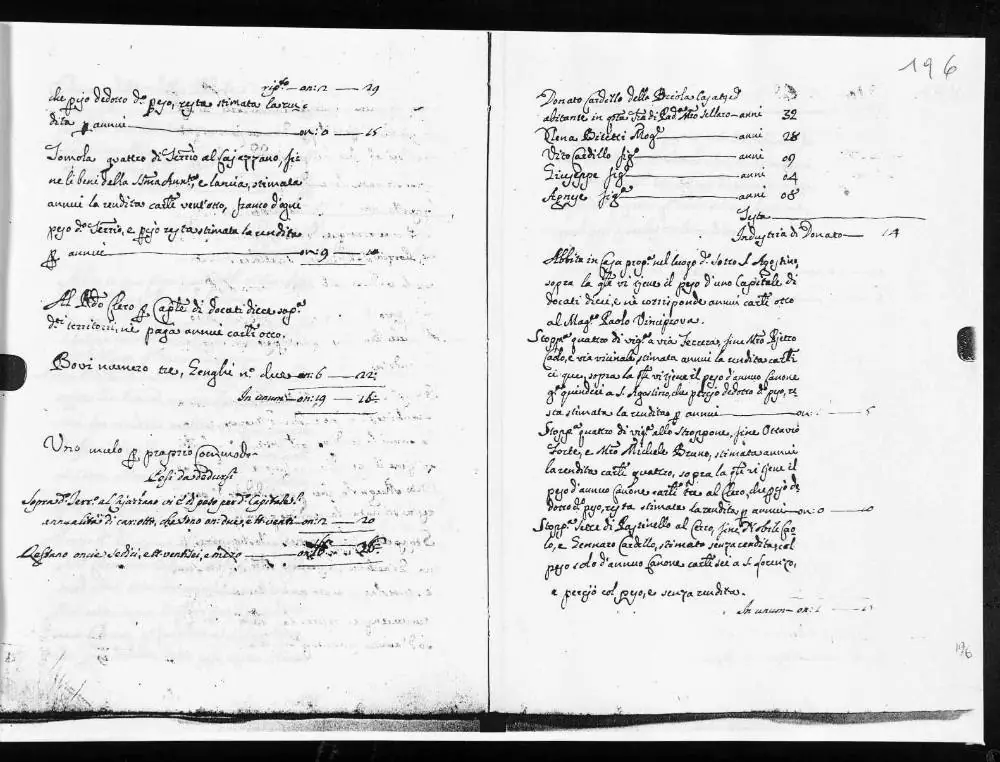
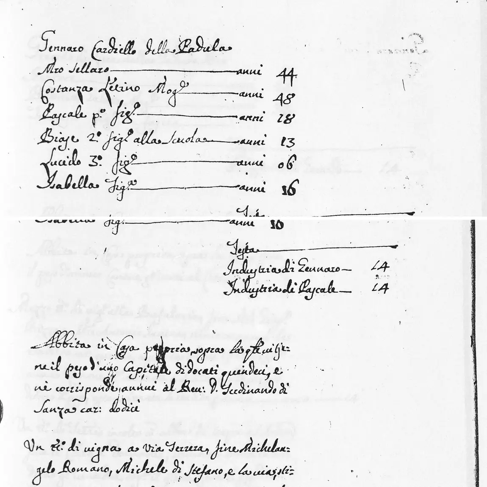
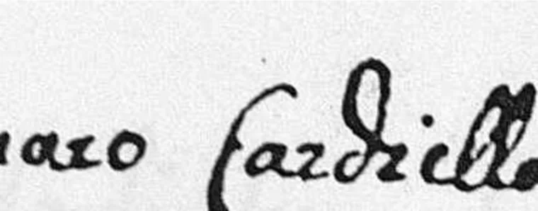
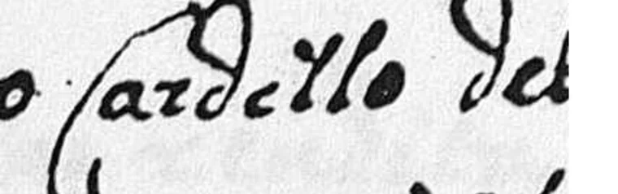
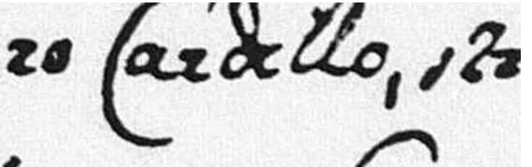
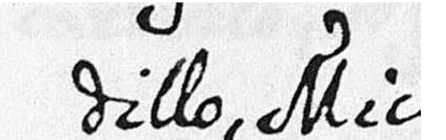
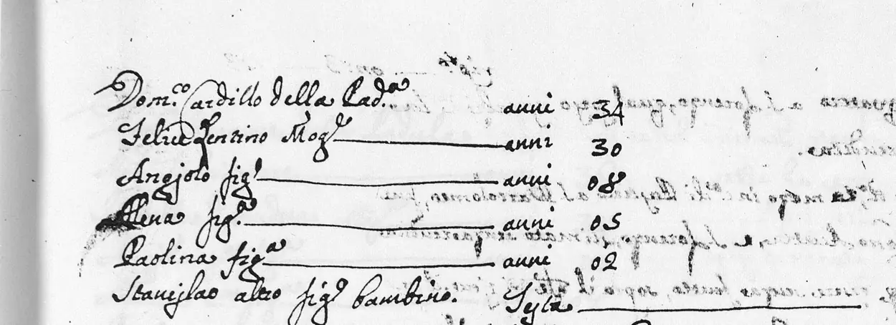

A pista que chegou cedo demais
Ao reconstruir a investigação, o dossiê corrigiu a memória sem oferecer uma cronologia perfeita. O vestígio mais antigo é de 7 de setembro de 2026: o fólio 196 já estava guardado, mas só seu cabeçalho tinha sido lido. Não ficou registrado por qual caminho a imagem foi encontrada. Ali estava Donato Cardello, três dias antes de Gennaro aparecer por outra via.
2026
Donato Cardello, 32 anos, mestre seleiro, vivia em Padula com a mulher Nena Bitetti e três filhos. O texto o chama de della Br[i]ola e acrescenta que ele havia casado e passado a morar em Padula. A leitura exata do lugar de origem continua em aberto.
- Donato Cardello · m.ro sellaro32 anos
- Nena Bitetti · mulher28 anos
- Vito · filho9 anos
- Giuseppe · filho4 anos
- Agnese · filha8 anos
Donato morava em casa própria, no lugar chamado Sotto S. Agostino. Declarou duas vinhas e um pastinello, uma área de cultivo ainda sem rendimento. Na descrição dessa última terra, no Cerro, havia um nome:
“Confinante com o Nobre Ca[o]lo e Gennaro Cardello.”
Essa frase, porém, não levou a pesquisa até Gennaro. Na primeira passagem, ela nem chegou a ser lida. O fólio de Donato só foi examinado por inteiro em 10 de setembro, depois que Gennaro já havia sido encontrado. Foi uma pista que chegou antes de seu significado: o documento estava na pasta, mas ainda não estava na história.

Que livro era esse?
O Catasto Onciario nasceu de uma reforma fiscal do Reino de Nápoles. Carlos de Bourbon ordenou o levantamento em 1740, e a Regia Camera della Sommaria expediu as instruções nos anos seguintes. O volume de Padula foi concluído em 1749. Cada chefe de família declarava as pessoas da casa, os bens, as atividades que produziam renda e os encargos que pesavam sobre eles. Essas declarações eram as rivele.
Um catasto feito de pessoas
A unidade doméstica era chamada fuoco: o fogo ou a lareira em torno da qual vivia uma casa. O imposto era calculado em oncie, origem do nome “onciario”. Diferente de um cadastro moderno desenhado a partir de lotes num mapa, ele parte das pessoas e de seus núcleos familiares.
Para o fisco, era uma conta. Para a pesquisa genealógica, acabou se tornando um retrato: nomes, idades declaradas, relações dentro da casa, ofícios, animais, vinhas, dívidas e vizinhos. A própria descrição da coleção de Padula no FamilySearch resume o conteúdo como habitantes, idades, profissões e propriedades.
Há ainda uma razão cronológica para esse livro ser tão valioso. A coleção de registros civis de Padula começa em 1809. O Catasto alcança a família sessenta anos antes, numa época em que nascimentos, casamentos e óbitos estavam nos livros paroquiais que não foram digitalizados nessa coleção.
Contexto histórico: SIAS — Catasto onciario; Archivio di Stato di Salerno; coleção de Padula no FamilySearch.
A previsão que levou a Gennaro
Os registros civis posteriores a 1809 já mostravam um Biase Cardillo de Padula, casado com Dorotea Mugno e pai de pelo menos quatro filhos. Um deles era Gennaro, nascido por volta de 1774; Gennaro, por sua vez, deu o nome Biase a um filho em 1820. Essa repetição sugeria que o nome de Gennaro também pudesse vir da geração anterior.
No sul da Itália era comum dar ao primeiro filho homem o nome do avô paterno e ao segundo o do avô materno. A família nem sempre seguia a ordem, crianças podiam morrer antes de aparecer em registros posteriores e um nome podia ser reutilizado. Por isso a tradição não prova uma filiação. Mas ela serve para formular uma pergunta testável: o pai do Biase mais antigo poderia se chamar Gennaro?
Antes da busca no livro, uma captura do MOSCARELLA Web Site, árvore mantida por um usuário no MyHeritage, mostrou um Gennaro Cardillo com um filho Biase. Era uma pista muito próxima da previsão, mas sem documento anexado. Por isso não servia como prova nem como confirmação: servia apenas para tornar a pergunta mais concreta.
Outra descoberta tornou o teste possível. Uma amostra do Catasto mostrou que os núcleos estavam agrupados pela inicial do nome de batismo do chefe da casa, e não pelo sobrenome. Em vez de ler 926 fólios em sequência, era possível procurar diretamente no bloco da letra G.
2026
Foram examinadas as imagens 104 a 151 do segundo registro. Na imagem 137, fólio 322, apareceu Gennaro Cardiello, mestre seleiro, com a mulher Costanza Letino e quatro filhos. O segundo filho era Biase, de 13 anos, “alla Scuola”.
- Gennaro Cardiello · m.ro sellaro44 anos
- Costanza Letino · mulher48 anos
- Pascale · 1.º filho18 anos
- Biase · 2.º filho, na escola13 anos
- Lucido · 3.º filho6 anos
- Isabella · filha16 anos
A casa tinha duas fontes de trabalho tributadas: a de Gennaro e a de Pascale, ambas avaliadas em 14 onças. Isso mostra que Pascale já contribuía na faixa integral dos adultos; não revela seu ofício, que não foi escrito. Biase ainda aparece na escola. O documento também registra casa própria, duas vinhas, um pastinello, um jumento e vários encargos financeiros.
No fim da conta, o escrivão escreveu “Non rimane cosa alcuna”: nada restava como base tributável depois das deduções. A frase não apaga a casa, as terras ou o animal enumerados logo acima; é o fechamento fiscal daquela declaração.

A terra entre dois nomes
Encontrar um Gennaro com um filho Biase era uma coincidência forte, mas ainda não resolvia outra dúvida: por que o chefe da casa aparecia como Cardiello, enquanto os registros da família diziam Cardillo?
A resposta estava justamente nos bens que pareciam detalhe. O pastinello do Cerro aparece nas duas declarações. Em ambas é uma terra sem rendimento, onerada por seis carlini anuais para S. Lorenzo. E cada homem nomeia o outro como confinante.
| Gennaro · fólio 322 | Donato · fólio 196 | |
|---|---|---|
| Parcela | Pastinello al Cierro | Pastinello al Cerro |
| Rendimento | sem rendimento | sem rendimento |
| Encargo | 6 carlini a S. Lorenzo | 6 carlini a S. Lorenzo |
| Confinante | Donato Cardillo | Gennaro Cardello |




A grafia variava; a terra não. Para estes dois homens, o próprio Catasto liga Cardiello, Cardello e Cardillo.
A ligação documental termina aí. Gennaro e Donato tinham o mesmo sobrenome em grafias diferentes, o mesmo ofício de mestre seleiro e terras contíguas. Isso torna um parentesco plausível, mas o Catasto não informa qual seria. Também é possível que a relação passe por casamento ou por uma rede de conterrâneos. O lugar de origem de Donato, Br[i]ola, ainda precisa ser lido e confirmado em outro documento. Os batismos e casamentos paroquiais são o caminho para distinguir essas possibilidades.
A terceira casa veio do futuro
O terceiro núcleo conhecido não apareceu por acaso. Dois óbitos de 1815 registravam filhas de um Domenico Cardillo: Paolina, filha de Domenico e Felice Lentino, e Angiola Maria, filha do mesmo pai com Margarita Arenella. Esses atos sugeriam procurar uma casa de Domenico seis décadas antes.
Como o Catasto estava organizado pelo nome do chefe, a busca voltou ao bloco D. Em 11 de setembro de 2026, o casal Domenico Cardillo e Felice Lentino apareceu no fólio 202, apenas seis fólios depois de Donato.
- Domenico Cardillo34 anos
- Felice Lentino · mulher30 anos
- Angiolo · filho8 anos
- Elena · filha5 anos
- Paolina · filha2 anos
- Stanislao · bebêsem idade
Casa própria, uma vinha de cerca de um tomolo na Via Terzera, um jumento e uma industria avaliada em 12 onças.
O campo onde aparece o ofício de Gennaro e Donato ficou vazio. A tarifa situa Domenico na mesma faixa fiscal de um bracciale documentado em outro fólio; não autoriza dar-lhe essa profissão exata.
Os três núcleos declararam vinhas na Via Terzera. Nenhuma dessas três parcelas os nomeia como vizinhos; o topônimo comum não prova contiguidade nem parentesco.
O total dos bens de Domenico foi 10 tarì, abaixo dos totais de Gennaro e Donato. É uma comparação fiscal entre as três declarações, não uma medida completa de riqueza.

Duas perguntas deixadas por esta casa
A Paolina de 1749 tinha dois anos, portanto nasceu por volta de 1747. A Paolina morta em 1815, filha do mesmo casal, declarou 54 anos, o que aponta para 1761. Pode ser a mesma pessoa com a idade errada, ou uma segunda filha que recebeu o nome depois da morte da primeira. O livro paroquial de óbitos entre 1749 e 1761 pode decidir.
O nome do primeiro filho, Angiolo, sugeria um avô paterno com esse nome. O bloco A do Catasto foi examinado em seguida e não revelou nenhum chefe de núcleo Cardillo. O resultado negativo não elimina Angiolo: ele poderia já ter morrido, viver agregado a outra casa ou simplesmente não corresponder ao costume dos nomes. A busca, se continuar, precisa passar aos livros paroquiais.
O menino no meio de um vazio de sessenta anos
Quando o fólio 322 foi encontrado, o Biase de treze anos parecia encaixar em tudo o que já se sabia. O nome do pai era o previsto. A idade permitia que ele fosse o homem que teve filhos em Padula a partir de cerca de 1770. O sobrenome variável havia sido explicado pela parcela de terra.
Mas ainda faltava o essencial: um documento que dissesse que aquele Biase era filho de Gennaro e Costanza. Os registros civis só o mencionavam muito mais tarde, já falecido, nos atos de seus filhos. Nenhum registro próprio de nascimento, casamento ou morte tinha aparecido.
O problema estava no calendário dos arquivos
O Catasto era de 1749. O registro civil de Padula começava em 1809. Entre os dois havia sessenta anos — justamente os anos em que Biase se tornou adulto, casou, teve filhos e morreu. A resposta precisava estar na paróquia.
Em setembro de 2026, o contato com Michele Cartusciello, diretor do Museo del Cognome de Padula, abriu essa porta. Ele enviou gentilmente fotografias de dois registros paroquiais: o casamento de Biase com Dorotea Mugnolo, em 29 de novembro de 1760, e o óbito de Biase, em 19 de setembro de 1802.
No casamento, a filiação aparece por extenso: “Blasium filium Januarij Cardillo, et quondam Constantiae Lentino”. Januarius é a forma latina de Gennaro; Costanza já estava falecida. Era o mesmo casal do fólio 322. O candidato deixou de ser candidato.
Como esses dois registros atravessaram o vazio e permitiram finalmente “bater o martelo” sobre Biase merece uma página própria. Esta história termina no instante anterior: quando o Catasto havia levado a pesquisa até a porta certa, mas ainda não podia abri-la.
O que estes fólios ainda podem contar
Os três núcleos são os que esta pesquisa conhece hoje. Eles não formam um levantamento completo de todos os Cardillo que poderiam estar no Catasto: parte do volume ainda não foi coberta, existe uma seção separada de forasteiros não residentes e o terceiro registro não aparece na coleção digital consultada. A palavra correta continua sendo “conhecidos”.
-
Prioridade
Qual era o parentesco entre Gennaro e Donato?
A parcela recíproca prova a vizinhança e resolve as grafias do sobrenome. O mesmo ofício reforça a proximidade social. Só os registros paroquiais podem mostrar se eram irmãos, primos, parentes por casamento ou apenas vizinhos da mesma rede de artesãos.
-
Hipótese
Dois irmãos Cardillo teriam casado com duas irmãs Mugnolo?
Pascale, irmão de Biase no fólio 322, nasceu por volta de 1731. Uma Carmosina Mugno morreu em 1810 como viúva de Pasquale Cardillo e vivia na strada S. Angiolo, a mesma rua onde Eduvigia, filha de Biase e Dorotea, morreu em 1816. No Catasto, a casa de Antonio Mugnolo tem duas filhas chamadas Carmosina e Dorotea; Dorotea está comprovada como mulher de Biase.
Há um obstáculo importante: Carmosina tinha dez anos no Catasto, portanto teria cerca de 71 em 1810, enquanto seu óbito declara 80. O ato também não informa seus pais, e Mugno é comum em Padula. Se a identidade de Carmosina e o parentesco entre Pascale e Pasquale forem confirmados, dois irmãos Cardillo terão se casado com duas irmãs Mugnolo. Hoje isso é uma simetria sugestiva, atravessada por nove anos de diferença, não uma conclusão.
-
Conflito documental
Houve uma ou duas Paolinas?
A diferença de catorze anos entre o Catasto e o óbito de 1815 precisa de uma explicação documental. Procurar uma criança chamada Paolina nos óbitos paroquiais é o teste direto.
-
Próxima fonte
O que os encargos levam a descobrir?
As casas, vinhas e terras aparecem acompanhadas de cânones, capitais e credores. Os atos notariais que deram origem a esses encargos podem registrar compras, heranças e acordos durante o intervalo em que o registro civil ainda não existia.
-
Cobertura
Existem outros núcleos Cardillo no volume?
A resposta exige completar os blocos ainda não examinados, localizar o registro ausente e considerar as seções de forasteiros. Até lá, qualquer afirmação de que havia somente três casas seria maior que a evidência.
Fontes e critérios
A narrativa foi confrontada com os fólios, as fichas estruturadas do acervo e a linha do tempo investigativa. Idades do Catasto são declarações aproximadas. Tradições de nomes servem como pistas, nunca como prova de parentesco.
- FamilySearch — Italy, Salerno, Padula, Civil Registration (Comune), 1809–1940, coleção que inclui o Catasto Onciario de 1749.
- SIAS — Catasto onciario, Archivio di Stato di Salerno.
- Archivio di Stato di Salerno — guia dos principais fundos.
- Archivio di Stato di Caserta — nota histórica sobre o Catasto Onciario, incluindo seu caráter de recenseamento por núcleos familiares.
- FamilySearch — guia introdutório à pesquisa italiana, sobre a tradição de nomes.
- Museo del Cognome, Padula.